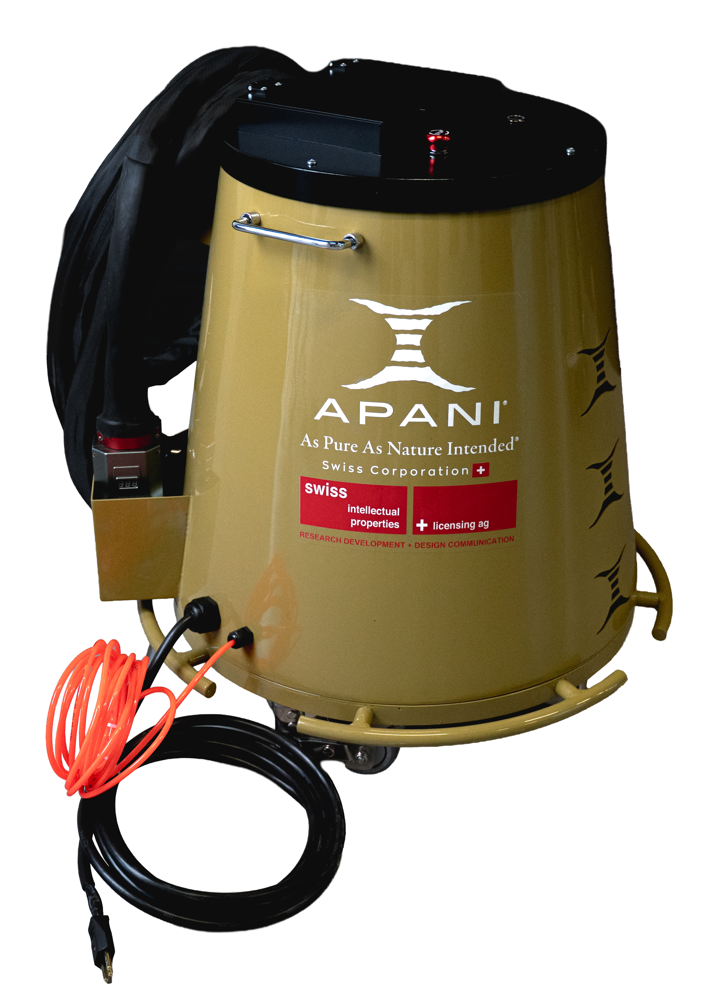

Lack entfernen mit Laser
Mit dem Laser lassen sich Lacke, Pulverbeschichtungen und Farbschichten kontrolliert abtragen — ohne Abbeizer, ohne Lösungsmitteldämpfe und ohne Schleifstaub. Die Oberfläche ist danach bereit für die neue Beschichtung.

Lackentfernung, die ohne Abbeizer und Schleifstaub auskommt
Alte Beschichtungen zu entfernen gehört zu den unbeliebtesten Arbeiten im Betrieb. Chemische Abbeizer müssen einwirken, wieder abgespachtelt und neutralisiert werden — und sie hinterlassen Rückstände, die als Sondermüll entsorgt werden. Schleifen erzeugt feinen Lackstaub, verrundet Kanten und erwischt in Sicken und Profilen nie alles. Sandstrahlen wiederum ist für empfindliche Bauteile oft zu aggressiv.
Bei der Laser-Lackentfernung wird die Beschichtung durch kurze Laserpulse verdampft und abgelöst. Die Leistung lässt sich so einstellen, dass nur die oberste Schicht abgetragen wird oder alles bis aufs blanke Material. So kann zum Beispiel eine Decklackschicht entfernt werden, während die Grundierung stehen bleibt — oder ein Bauteil wird komplett entschichtet.
Der Laser arbeitet trocken und ohne Kontakt. Es gibt keine Einwirkzeiten, keine Neutralisation und keine Lösungsmittel im Raum. Der entstehende Rauch wird über eine Absaugung bzw. einen Filter abgeführt. Weil kein mechanischer Druck auf das Werkstück wirkt, bleiben Kanten, Profile und feine Konturen erhalten — ein grosser Vorteil bei Formteilen, Gussstücken und Bauteilen mit enger Toleranz.
Für Betriebe, die regelmässig entlacken — Carrosserien, Metallbauer, Restauratoren und Schreinereien mit Beschlägen oder Metallteilen — bedeutet das weniger Vorbereitung, weniger Nacharbeit und keine Entsorgung von Abbeizer-Schlamm mehr.
Laser im Vergleich zu Abbeizer und Schleifen
Die wichtigsten Unterschiede bei der Entfernung von Lack und Beschichtungen.
Symbolbild — Ziehen Sie den Regler, um Vorher und Nachher zu vergleichen.
| Kriterium | Chemischer Abbeizer | Schleifen | APANI Laser |
|---|---|---|---|
| Chemikalien & Dämpfe | Ja, Lösungsmittel | Nein, aber Lackstaub | Keine Chemie, Rauch wird abgesaugt |
| Einwirkzeit | Ja, oft mehrfach | Keine | Keine |
| Schichtweises Abtragen | Kaum steuerbar | Schwer steuerbar | Über Leistung steuerbar |
| Kanten & Profile | Rückstände in Ecken | Werden verrundet | Bleiben erhalten |
| Entsorgung | Sondermüll | Staub, Schleifmittel | Nur Filterrückstände |
| Untergrund danach | Muss neutralisiert werden | Angeraut | Trocken und sauber |
So läuft die Laser-Entlackung ab
1. Schichtaufbau prüfen
Lackart, Schichtdicke und Untergrund bestimmen die Einstellung. Ein kurzer Test an einer unauffälligen Stelle zeigt die richtige Leistung.
2. Kontrolliert abtragen
Der Laser trägt die Beschichtung Bahn für Bahn ab — wahlweise nur den Decklack oder alles bis aufs Grundmaterial.
3. Neu beschichten
Die Fläche ist trocken, frei von Lösungsmittelresten und kann direkt vorbereitet und neu beschichtet werden.
Typische Anwendungen der Laser-Lackentfernung
Überall dort, wo Beschichtungen sauber und ohne Chemie herunter müssen.
Ein häufiger Fall in der Praxis ist die Teilentlackung: Nur an einer Schweiss- oder Prüfstelle soll der Lack weg, der Rest des Bauteils bleibt beschichtet. Mit dem Laser lässt sich diese Fläche sauber begrenzen, ohne aufwendig abzukleben. Auch fehlerhaft beschichtete Teile aus der eigenen Produktion lassen sich entschichten und neu beschichten, statt sie zu entsorgen.
Welcher APANI Laser passt zu Ihrer Lackentfernung?
Wie schnell ein Lack heruntergeht, hängt stark von Lackart, Schichtdicke und Untergrund ab — dicke Mehrschicht-Aufbauten brauchen deutlich mehr Zeit als eine dünne Farbschicht. Deshalb empfehlen wir eine Live-Präsentation, bevor Sie sich für ein Gerät entscheiden.

AP300
Laser-Reinigungssystem- Für Einzelteile und Teilentlackung
- Feine, kontrollierte Arbeit
- Kompakt und mobil
- 230 V Plug & Play
AP500
Laser-Reinigungssystem- Für grössere Flächen und dickere Schichten
- Mehr Leistung pro Stunde
- Benötigt bauseitigen Kompressor
- 230 V Plug & Play
Erst sehen, dann entscheiden
APANI begleitet Sie vom ersten Test bis zum Service — direkt aus der Schweiz.
Live-Präsentation
Die Präsentation findet bei unserem Partner Carrosserie & Spritzwerk Marty in Wangen SZ statt.
Testgerät & Leasing
Testen Sie den Laser im eigenen Betrieb oder verteilen Sie die Investition über Leasing. Preise und Konditionen erhalten Sie auf Anfrage.
Einschulung inklusive
Bei der Lieferung schulen wir Ihr Team direkt am Gerät — Bedienung, Parameter und sicheres Arbeiten.
230 V Plug & Play
Normale Steckdose, kein Wasseranschluss, keine Kabine. Der Laser ist sofort dort einsatzbereit, wo die Arbeit anfällt.
2 Jahre Garantie
Alle APANI Laser kommen mit zwei Jahren Garantie — für einen sorgenfreien Einstieg in die Lasertechnik.
Service in der Schweiz
Wartung und Service übernimmt APANI selbst in der Schweiz — ohne Umwege über ausländische Servicestellen.
Häufige Fragen
Kann der Laser nur eine Lackschicht entfernen?
+Ja, das ist einer der grössten Vorteile. Über Leistung und Anzahl der Durchgänge lässt sich steuern, wie tief der Laser abträgt — von der obersten Schicht bis zum blanken Untergrund. Wie genau das bei Ihrem Schichtaufbau funktioniert, zeigen wir Ihnen bei einer Live-Präsentation.
Funktioniert die Laser-Lackentfernung auch auf Aluminium?
+Ja, Lack lässt sich auch von Aluminium und anderen Metallen entfernen. Da Aluminium empfindlicher reagiert als Stahl, werden die Parameter angepasst. Die passenden Einstellungen erhalten Sie bei der Einschulung.
Entstehen bei der Laser-Entlackung giftige Dämpfe?
+Beim Verdampfen von Lack entsteht Rauch, der je nach Beschichtung Schadstoffe enthalten kann. Deshalb arbeiten Sie mit Absaugung bzw. Filter. Lösungsmitteldämpfe wie beim Abbeizen entstehen nicht.
Ist der Laser auch für Pulverbeschichtungen geeignet?
+Ja. Pulverbeschichtungen sind meist dicker als Nasslack, darum dauert der Abtrag länger. Für regelmässige Entschichtung grösserer Teile ist der leistungsstärkere AP500 meist die bessere Wahl.
Wie kann ich die Laser-Lackentfernung live sehen?
+Vereinbaren Sie einen Termin für eine Live-Präsentation bei unserem Partner Carrosserie & Spritzwerk Marty in Wangen SZ. Danach ist auch ein Testgerät oder Leasing möglich.
Weitere Anwendungen: Laser-Rostentfernung · Schweissnaht-Reinigung mit Laser